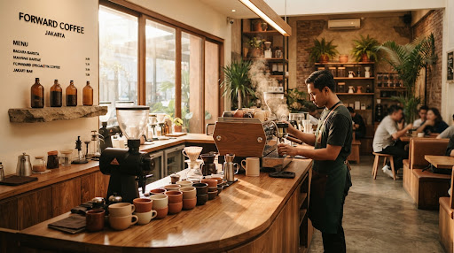
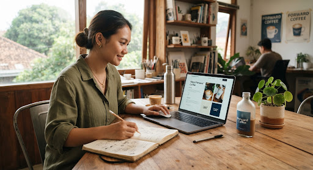
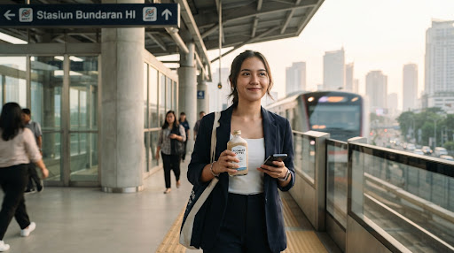
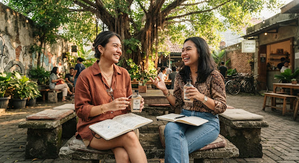
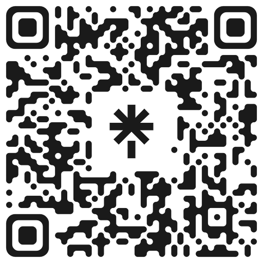

Move Forward, One Sip at a Time.
“Menemani perjalanan sehari-hari.”
We created Forward Coffee to be your steady daily companion — thoughtful, accessible, and grounded in quality. Not an exclusive luxury, but a mindful pause woven seamlessly into the cadence of your morning, afternoon commute, and late-night creative desk.
An open exploration of slower extraction, unrefined Nusantara sugar palms, and the modern Indonesian work cadence.

Crafted for the Real Walk of Life
From quiet corner espresso bars to on-the-go pocket bottles, brewed with deliberate poise.
A Quiet Antidote to Urban Velocity.
“Coffee does not need to shout to be memorable. It only needs to stay honest, balanced, and present.”
Head Roaster, Forward CollectiveIt started with a singular commitment: to quietly elevate ordinary routines into moments of grounded poise. We observed the daily hustle along Jakarta's Sudirman corridor, the slow creative rain afternoons across Bandung's hillside studios, and the relentless speed of modern work.
Most daily coffee had become either an indistinguishable, sugary commodity or an intimidating, clinical ritual. We asked ourselves: can daily coffee be intensely thoughtful without being pretentious? Can it accompany a morning subway commute with the same elegance as a slow pour-over at home?
The response became FORWARD. We set out to formulate ready-to-sip bottled cold brews that honor regional Indonesian terroir while fitting snugly inside your tote bag, desk setup, or jacket pocket. Every sip is balanced to steady your breath rather than spike your senses.
Built on Restraint, Defined by Nuance
The three foundational commitments that inform our roast dial, bottling method, and daily interactions.
Calm & Approachable
Coffee without pretension. Simple, welcoming, and deeply comforting — designed to offer absolute clarity in a crowded, noisy world. We believe the best coffee is the cup that meets you where you are.
Thoughtful Craft
Small-batch formulation with finely dialed Arabica and Robusta proportions, velvety dairy emulsions, and raw organic aren harvested sustainably from West Java highland groves.
Quiet Confidence
A philosophy of deliberate restraint that trusts taste over loud marketing gimmicks. High-grade ingredients speak distinctly through every bottle sip, needing no artificial enhancements.
The 250ml Signature Profiles
A closer look into our two signature companion bottles: formulated fresh weekly, sealed for everyday transit, and strictly uncompromised.

Recyclable PET 250ml ergonomic vessels with forest green fluted caps, designed for smooth shaking before opening.
Salted Spanish Latte
A rich and creamy coffee drink, blended with velvety condensed and fresh dairy, kissed with a subtle trace of mineral sea salt. Delivers an indulgent yet refreshing sip with zero harsh aftertaste.
Aren Latte
A comforting union of bold Nusantara roast, silky dairy, and organic artisanal palm sugar (gula aren). Unrefined, earthy, and fragrant with a mellow, round finish.
Woven Through Your Day
Captured across the creative spaces, design desks, and commute pathways of Jakarta, Bandung, and wherever focused work takes place.

The Creative Flow Companion
Fueling early sketches and thoughtful revisions when quiet focus matters most.

The Morning Transit Companion
An unhurried anchor amid the rapid cadence of Jakarta’s central transit hubs.

The Community Courtyard
Slow conversations after long sprint hours, connecting minds over cold brews.
Scan to Stay Connected
Point your smartphone camera at our bottle badge to discover seasonal batch drops, curated sound playlists, and barista brewnotes straight from our roast room.
“Wherever you are headed today, keep moving forward.”
FORWARD COFFEE CO. • EST. 2024
Scan via camera app for immediate access to current roast lot specs.